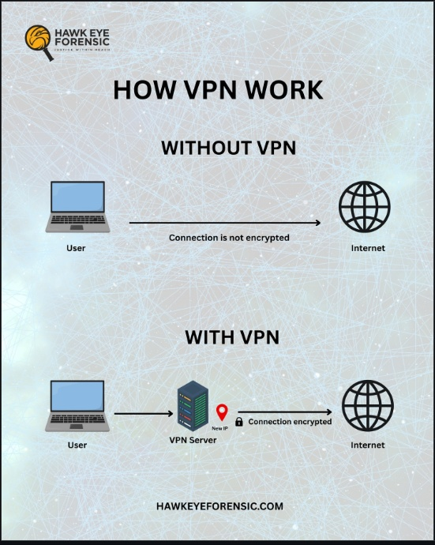

The Wonderful World of VPNs
A simple guide to online privacy, restricted content,
and deciding whether a VPN is right for you.
Who is this for?
If you want more privacy online, regularly use public Wi-Fi, or have encountered content unavailable in your region, you may have considered using a VPN. This guide will explain what VPNs actually do, their limitations, and how to decide whether one is useful for you.
Why use one?
-
Privacy: Hide your public IP address and reduce what networks can observe about your traffic.
-
Public Wi-Fi: Add protection when using networks at airports,
coffee shops, campuses, and hotels.
-
Region-Restricted Content: Connect through servers in different locations to
access content available in those regions.
-
Travel:
Access services and information that may work
differently when you're away from home.
What is a VPN?
A Virtual Private Network (VPN) creates an encrypted connection between your device and a VPN server. Instead of websites directly seeing your normal internet connection and IP address, your internet traffic is routed through the VPN server.

What are your options?
There are many VPN providers, and they vary in price, features, and privacy policies. Some popular options include:
 ExpressVPN
ExpressVPN
Pros
Cons
- lacks complete anti-virus tools
More info
- NordVPN
Pros
- Very competative connection speeds
Cons
More info
- Surfshark
you can view the full list here VPN Providers
How Do You Actually Use a VPN?
Most consumer VPNs are designed to be simple to use. The exact
interface will vary between providers, but the basic process is
usually the same:
1
Choose
Find a VPN provider that fits your needs and budget.
>>
2
Download
Get the official application from the provider or app store.
>>
3
Sign In
Open the application and sign into your account.
>>
4
Select
Choose a VPN server or region.
>>
5
Connect
Connect and confirm that the VPN is active.
Choosing a Server
If you primarily want privacy while browsing, a nearby server is
usually a good starting point. If you need your connection to appear
to come from another region, choose a server located in that region.
When You're Finished
You can disconnect through the VPN application whenever you no longer
need the VPN connection. Your device will then return to using its
normal internet connection.
How Does a VPN Actually Work?
Normally, your device connects to the internet through your
Internet Service Provider (ISP). Websites can see the public IP
address associated with that connection.
When you connect to a VPN, your device first creates an encrypted
connection to a VPN server. Your internet traffic is then routed
through that server before continuing to its destination.
What Doesn't a VPN Do?
VPNs are useful privacy tools, but they do not make you completely
anonymous or protect you from every online threat.
-
Malware:
A VPN does not make a malicious download safe.
-
Phishing:
A VPN cannot prevent you from entering your password into a fake website.
-
Account tracking:
Websites may still recognize you when you sign into an account.
-
Complete anonymity:
A VPN changes how your connection reaches the internet, but it does
not make all of your online activity anonymous.
What Can a VPN Actually Protect?
A VPN can improve your privacy by changing how your device connects
to the internet. While it does not make you completely anonymous,
there are several things a VPN can help protect.
Your Public IP Address
When connected to a VPN, websites will generally see the VPN server's
public IP address instead of the public IP address associated with
your normal internet connection.
Traffic on Your Local Network
A VPN creates an encrypted connection between your device and the VPN
server. This provides additional privacy when using networks you do
not control, such as public Wi-Fi at a coffee shop, airport, hotel,
or campus.
Your Apparent Location
VPN providers operate servers in different locations around the world.
Connecting to one of these servers can make websites and online
services see your connection as originating from the VPN server's
location rather than your own, which is useful while traveling or
when accessing information and media that may be available differently
depending on your region.
Common VPN Problems
VPNs don't always work perfectly. Here are a few common problems
and some simple things you can try.
-
My connection became slower.
Try a server closer to your physical location. Connecting
through distant servers can increase latency.
-
A website shows the wrong region.
Make sure your VPN is connected and try another server
in the region you want to use.
-
A website blocks my VPN.
Some websites restrict known VPN servers. Trying another
server may help, but access is not guaranteed.
Security & Privacy Concerns
A VPN can improve your privacy, but it also changes who you are trusting.
Your traffic is routed through the VPN provider's servers, making the
provider's privacy practices and handling of user data important.
Free VPNs are not automatically unsafe, but VPN services cost money to
operate. Some free services may rely on advertising, collect user data,
or offer fewer privacy features.
Finally, a VPN is only one layer of security. It cannot replace strong
passwords, multi-factor authentication, software updates, or careful
browsing habits.
Remember: A VPN does not eliminate trust—it changes
who you are trusting with part of your internet connection.
Should You Use a VPN?
A VPN can be a useful tool if you regularly use networks you do not
control, want to reduce exposure of your public IP address, travel
frequently, or need to connect through servers in another region.
However, a VPN should be treated as one privacy and security tool
rather than a complete solution. It cannot protect you from every
online threat, and choosing a trustworthy provider is still important.
Ultimately, whether you need a VPN depends on what you are trying to
accomplish. Understanding what VPNs can and cannot do allows you to
decide whether using one makes sense for your own situation.